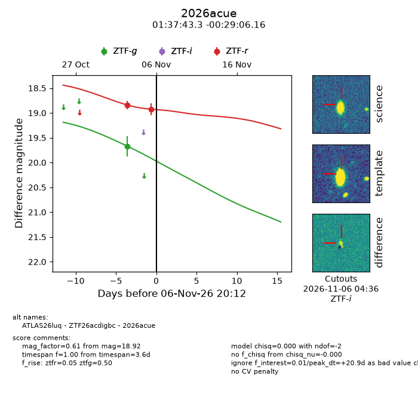
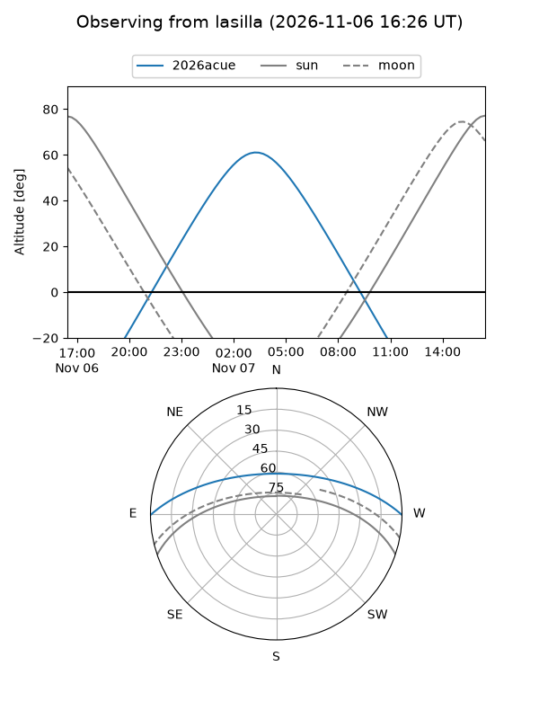
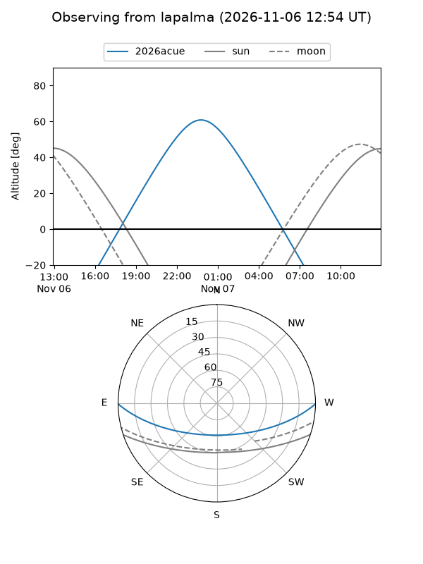
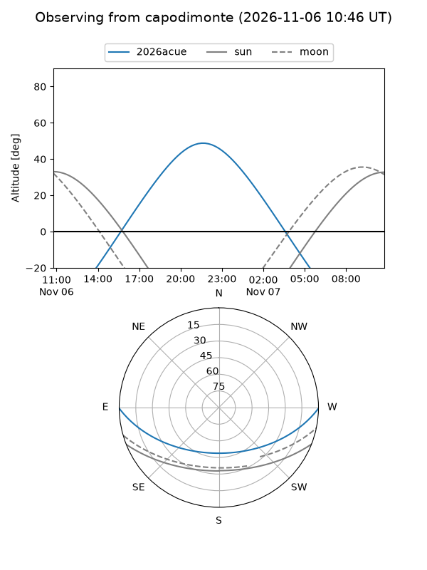
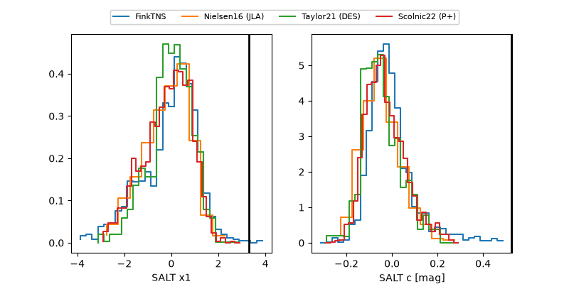

2026acue
Target 2026acue at 2026-11-06 20:14
Aliases and brokers:
FINK-ZTF: ztf.fink-portal.org/ZTF26acdigbc
Lasair-ZTF: lasair-ztf.lsst.ac.uk/objects/ZTF26acdigbc
ALeRCE-ZTF: alerce.online/object/ZTF26acdigbc
YSE-PZ: ziggy.ucolick.org/yse/transient_detail/2026acue
TNS name: wis-tns.org/object/2026acue
Direct TNS query: direct search
alt names
ZTF26acdigbc (ztf,fink_ztf)
2026acue (tns,yse)
ATLAS26luq (atlas)
Coordinates:
equatorial (ra, dec) = 24.4304,-0.48504
equatorial (HMS+DMS) = 01:37:43.28,-00:29:06.16
galactic (l, b) = (147.4787,-61.13149)
Flags:
peak dt: +20.9
Photometry:
last ztfg=19.67, ztfr=18.92
1 ztfg, 2 ztfr detections
Lightcurve

Visibility



Additional plots
